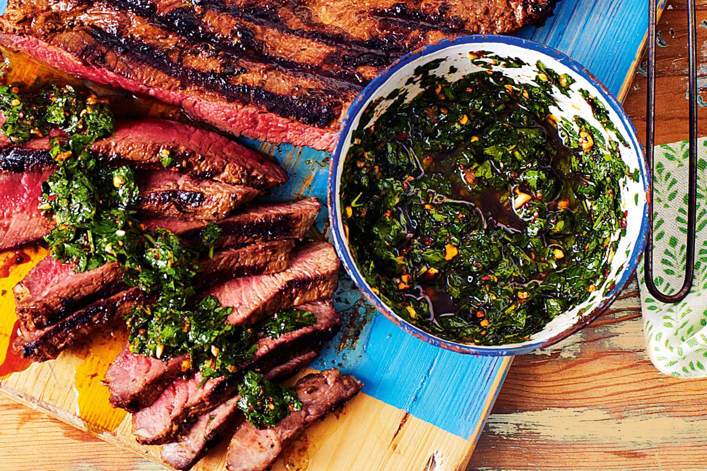

Return Home
Chimichurri Sauce

This famous Argentinian chimichurri sauce is perfect for any grilled chicken, meat, or fish.
Argentine chimichurri is usually prepared in a mortar or by finely chopping the herbs.
Ingredients
- 1 cup fresh parsley
- ¾ cup extra virgin olive oil
- 3 tablespoons red wine vinegar
- 2 tablespoons dried oregano
- 2 teaspoons ground cumin
- 1 ½ teaspoons minced garlic
- 1 ½ teaspoons pepper sauce (such as Frank's Red Hot®)
- 1 teaspoon salt
Steps
- Combine parsley, oil, vinegar, oregano, cumin, garlic, hot sauce, and salt in a blender or food processor. Mix on medium speed until ingredients are evenly blended, about 10 seconds.
Return top